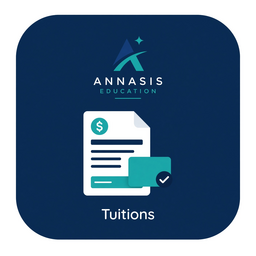
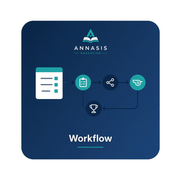

Base SIS
Family record, Admissions and re-enrollment, Attendance, schedules, Gradebook, report cards, transcripts, the Parent portal and communication, and health records — on one student and family system.
Not just a student information system but a school operating system for private education — not a gradebook with hidden or add-on finance costs later, and not three disconnected products. Private schools have customers: Parents, Students, and Faculty — and success for each of them is the point. They use the school’s own site and SMS. The office keeps QuickBooks. The result is a better experience for Parents and Students, streamlined tools and operations for the office, and lower cost for private schools.

Base SIS plus seven foundation modules — not an all-inclusive list. Base SIS brings the family record (including multi-campus), Admissions and re-enrollment, Attendance, class and bell schedules, Gradebook and progress reports, report cards, transcripts, the Parent portal, email and text announcements, group email and SMS, health records and medical notes, the discipline log, and analytics and reporting together. The modules add tuition & billing with payment plans, the school store, event registration, donations & fundraising (including sponsor invites for students and events, plus round-up on store purchases), QuickBooks, uniform exchange, and athletics eligibility workflows with waivers and consents. Event registration and the store sit on that same foundation — Events and Store.
Family record, Admissions and re-enrollment, Attendance, schedules, Gradebook, report cards, transcripts, the Parent portal and communication, and health records — on one student and family system.

Tuition management, payment plans, incidental billing, and online payments — in the annual price — not as hidden or add-on costs later.

Camps, extracurriculars, games, and fundraisers — register and pay without a second login.

Clearance, waivers, and consents with serial or parallel approvals — without a bolt-on forms product like FinalForms.

Empowering Student, Parent, Faculty, and School success. Private schools have customers — Parents, Students, and Faculty. Peers sell an SIS and then bolt on events, ecommerce, athletics forms, a store, or uniform swaps — some of those jobs, rarely all of them. ANNASIS was written so apply, grade, pay, play, register, shop, approve, and exchange share one system — at one price. The result is a better experience for Parents and Students, streamlined tools and operations for the office, and lower cost for private schools.
Compare the stack → · Ecosystem →Schools use the operating system to simplify the office, improve the day for Parents, Students, and Faculty, and lower operating effort. Better Parent and Student experience; simpler operations; lower cost.
Read the stories →Still relying on separate tools and processes beside the SIS — while Parents, Students, and Faculty feel every gap? ANNASIS has the foundation to address those operations. Choose the modules you want now to integrate with your current student information system — or run the full suite when you are ready. The result is a better experience for Parents and Students, streamlined tools and operations for the office, and lower cost for private schools.